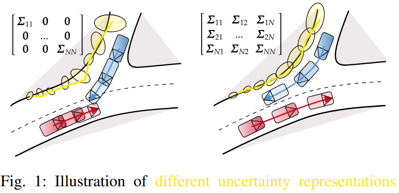

Andreas Look
Professor for Autonomous Systems · Coburg University of Applied Sciences
About
I am a Professor for Autonomous Systems at Coburg University of Applied Sciences (HS Coburg). My research is driven by the vision of creating intelligent, safe, and scalable autonomous vehicles. I focus on the intersection of Artificial Intelligence and Robotics, specifically addressing the challenges of operating in highly dynamic, unpredictable, and partially observable environments.
To achieve this, my work explores the frontiers of Reinforcement Learning, Trajectory Prediction, and Uncertainty Modeling. By leveraging modern machine learning techniques—from information-theoretic approaches to the integration of foundation models—my goal is to develop algorithms that don't just succeed in simulation, but can safely handle complex real-world edge cases such as heavy occlusions and stochastic human behaviors.
My academic philosophy is deeply informed by my industry background. Before joining HS Coburg, I was a Research Scientist at the Bosch Center for Artificial Intelligence (BCAI). There, I worked on the full pipeline of applied AI, translating cutting-edge theoretical research into robust software for automotive systems. This experience cemented my core belief: true algorithmic breakthroughs must be validated through real-world deployment on actual hardware.
Today, I am dedicated to advancing this research frontier while educating the next generation of robotics and AI engineers. I am always open to academic collaborations, industry partnerships, and discussions with motivated students.
Interests
Selected Publications
